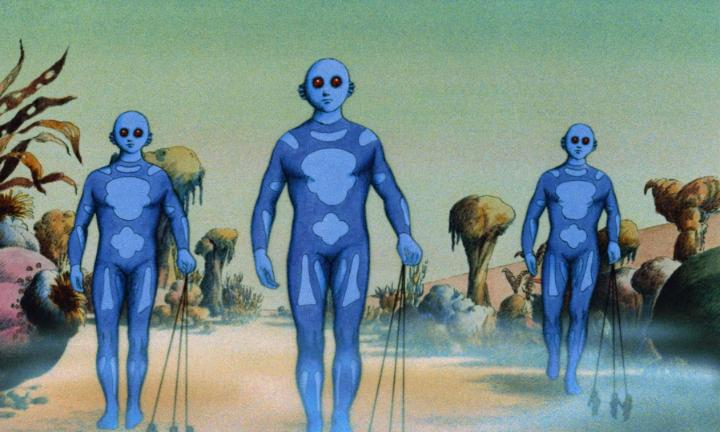
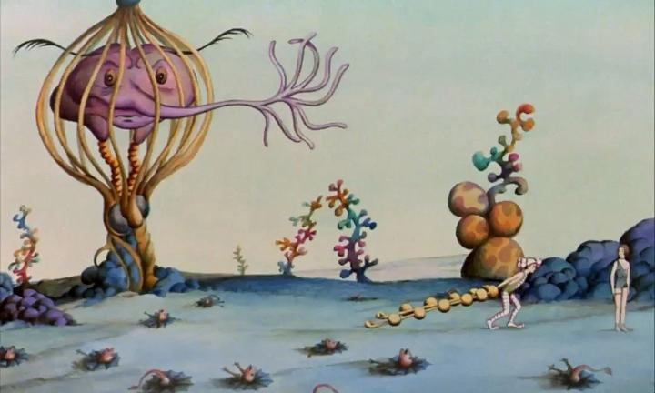

It's only recently that I learned of a wider genre of European science-fiction animated films from the 70's and 80's. But all of them stemmed from the one film I had heard about: 1973's "Fantastic Planet." The one with the iconic poster with a blue alien with red eyes. The one with the hilariously dry movie trailer, clearly made by editors who had no idea how to market the film. And one of the very few animated films in the Criterion Collection's expensive home video library. Set on another planet, the human race (as we know them) appear to be living in the wild, tormented by giant, intelligent, blue aliens (referred to as the "Draags"). Draag children see humans as ants or fleas, playing with them on the ground to see how they react, often accidently killing them, or attempting to raise them as harmless pets, complete with dressing them in silly clothes and training them to do tricks. The movie opens with a human mother trying to escape with a baby in her arms, dying at the hands of unaffected Draag children, and another Draag child named Tiwa adopting the newly orphaned protagonist, named Terr. Through Terr's eyes, we learn more of the exotic, imaginative, alien culture of the Draags... mired by bureaucracy and everyone speaking perfect French. We slowly learn that the human race was abducted from their home planet as curiousities and left to fend for themselves as a new species on the Draags' planet. About a third into the movie, Terr, now a young adult, manages to escape, with a telepathy schooling device to help him learn the language and history of the Draags, and finds other "wild" humans to collectively fight for their freedom.In hindsight, the story (based on a French novel called "Oms en serie") is an interesting bit of science fiction, primarily framed around the reversal of roles - humans being treated like bugs, a species we in real life think little of. In practice, the story is largely inconsequential, and just an excuse to bring the camera to new locations and to face new perils. At least, I'd say so, if the movie wasn't so self-invested in that story. The trailer might give you the impression that the majority of the movie would be of these wildly imaginative and hallucinatory settings, creatures, and alien customs. But I'd guess these scenes make up... maybe 10% of the movie? To have to sit through the story, with dry and non-emotive dialogue (and a very human-like race of Draags that takes one out of the plot), is a bit of a slog. Mercifully, the film's runtime is short, even if it doesn't feel so. That's not to say the story is bad, but perhaps just not what I'm used to. The whole adventure is very... French, reminiscent of what are now classic and iconic French comic books defining European science fiction (see Jean Giraud, aka "Moebius"). These stories are invested in placing you, the reader, in an exotic and detailed new world, but while they were new and revolutionary at the time, that story quality might seem archaic today. And compared to reading a novel without images... the visuals are another topic, but I could vividly imagine reading in wonder the novel describing these scenes, but the film's visuals themselves of those same scenes feel like a disappointment by comparison. The novel might make for an excellent high-school book report, perhaps with the film as a compliment.

The visuals and animation of "Fantastic Planet" might be the most divisive thing. It looks like coloured pencil on textured paper, like an old pre-1900's illustration. Much of the animation looks like cutout paper cleverly composited to create a moving figure. And there's a LOT of static shots with little to no movement. In short, it looks like a first film, and not much better than what a teenager today could make on a desk. And the human designs and faces... wow, they are ugly, and it doesn't do the film favours to hold a shot on a human's face for several seconds at a time. The one saving grace is the few times when the film passes by an alien animal or creature in the background, each well designed and darkly funny, but still a monsterous danger to the tiny humans, animated like a Terry Gilliam clip. There's personality and charm to the planet's creatures and stranger scenes of ritual, but as stated before, these are far too seldom over the film's runtime. I suppose the rougher elements of the visuals and animation make "Fantastic Planet" look even more like a "hand-made, hand-produced" film than usual, and fans who adore seeing the line work, the graphite, the dust and fingerprints, warts and all, would be more positive than I was. But I think there's a balance between hand-drawn and clean, professional output, and going too far in either direction can ruin the film. This is all to say I sound quite negative on "Fantastic Planet," and it's a sentiment I find myself repeating on many other films on this genre (old animated sci-fi). But do keep in mind this is because of the quality of what we've gotten in the decades since, in quality of writing, design, and animation, across many genre but especially science fiction (remember space travel was a relatively new idea in the 70's). We've made leaps and bounds, from artists who were likely inspired by "Fantastic Planet" and director Rene Laloux. Even if it doesn't hold up well today, I can't argue the cultural significance and historical importance of the movie. And being a serious, adult science fiction piece, this could be a breath of fresh air for viewers who feel tired of childish family films or shallow anime. - "Ani" More reviews can be found at : https://2danicritic.github.io/ Previous review: review_Fantasia_2000 Next review: review_Fate_-_Apocrypha